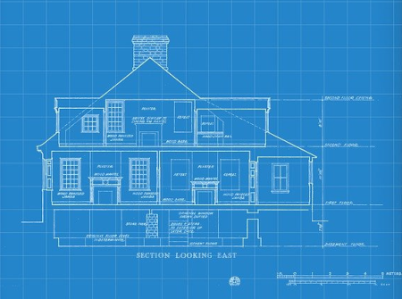

Context#
Deze les gaat over klassen en over objecten: instanties van klassen

Eerder is een klasse beschreven als een blauwdruk, het is de bouwtekening die vertelt wat nieuwe objecten moeten zijn. Denk aan de bouwtekening van een huis: op basis van die tekening kan één huis worden gebouwd, maar ook 100 of meer.
De object context#
public class House {
private int number;
private String colour;
public House(int number) {
this.number = number;
colour = "red";
}
public House(int number, String colour) {
this.number = number;
this.colour = colour;
}
public String toString() {
return String.format("House number %d with colour %s", number, colour);
}
}
De klasse House heeft twee constructors: één met alleen het huisnummer en een andere met zowel een huisnummer als een kleur. Dit geeft aan dat bij het maken van een huis in ieder geval een huisnummer meegegeven moet worden (maar niet welke), maar dat een kleur optioneel is. Pas bij een aanmaken van een huis (object) worden deze waarden concreet.
House myHouse = new House(149);
House yourHouse = new House(150, "blue");
System.out.print(myHouse)
House number 149 with colour red
System.out.print(yourHouse)
House number 150 with colour blue
De statische context#
public class Account {
private String name;
private static double balance;
public Account(String name) {
this.name = name;
balance = 0.0;
}
public void deposit(int amount) {
balance += amount;
}
public double getBalance() {
return balance;
}
public String toString() {
return String.format("%s's balance: %.02f", name, balance);
}
}
Hierboven zie je een andere klasse, een spaarrekening waar geld op kan worden gestort. Let op, tot nu toe heb je methoden gezien die statisch gedefinieerd waren met het keyword static (denk aan main), maar velden kunnen ook statisch zijn. Hier is het veld balance statisch gedefinieerd. Let nu op wat er in de onderstaande code-voorbeelden gebeurt:
Account misja = new Account("Misja");
Account simon = new Account("Simon");
misja.deposit(1500);
System.out.print(misja);
Misja's balance: 1500.00
simon.deposit(2500);
System.out.println(simon);
Simon's balance: 4000.00
System.out.println(misja);
Misja's balance: 4000.00
Dat is makkelijk rijk worden 😎. Maar wat gebeurt hier 🤔?
static#
Een klasse is niet alleen maar een definitie, hij kan ook waarden hebben. Dit zijn zogenaamde statische waarden, die gedefinieerd zijn voor de klasse en daardoor hetzelfde zijn voor alle objecten die van die klasse gemaakt worden.
public class Hello {
public static void main(String[] args) {
System.out.println("Hello, " + args[0] + "!");
}
}
Met waarden bedoelen we hier niet alleen variabelen (data) maar ook methoden, bijvoorbeeld de welbekende methode main. Als een waarde eigen is aan de klasse dan betekent dit dat geen instantie van deze klasse nodig is om de methode aan te roepen.
> java HelloWorld.java Misja
De argumenten die via de commandline zouden worden gegeven en verzameld worden in een array van String’s.
String[] args = {"Misja"};
Hello.main(args);
Hello, Misja!
De aanroep van de methode main via de klasse, en niet een via een instantie van de klasse.
Combineren#
Context mixen.
public class Person {
private String name;
public Person(String name) {
this.name = name;
}
public String toString() {
return name;
}
public static void main(String[] args) {
Person a = new Person("Ariel");
Person b = new Person("Bo");
System.out.println("Hi " + a + " and " + b + "!");
}
}
De klasse als “client” van zichzelf.
> java Person.java
Person.main(args)
Hi Ariel and Bo!
|
niet |
|
|---|---|---|
methode |
|
|
veld/variabele |
|
|
Je hebt inmiddels zowel methoden als klassen in een objectcontext én in een statische context gebruikt; je zal hier een aantal aanroepen wellicht herkennen.
Onverandelijkheid#
Door gebruik te maken van final zorg je ervoor dat een eenmaal aangemaakte variabele niet meer van waarde kan veranderen. Deze is nu final.
public class Square {
public static final int MAX_WIDTH = 100;
}
Square.MAX_WIDTH;
100
Square.MAX_WIDTH = 101;
| Square.MAX_WIDTH = 101;
cannot assign a value to final variable MAX_WIDTH
Math.PI
3.141592653589793
Math.PI = 2 * Math.PI
| Math.PI = 2 * Math.PI
cannot assign a value to final variable PI
De conventie is dat final velden met hoofdletters worden geschreven. Het geeft aan dat het constanten zijn, onveranderlijke waarden.